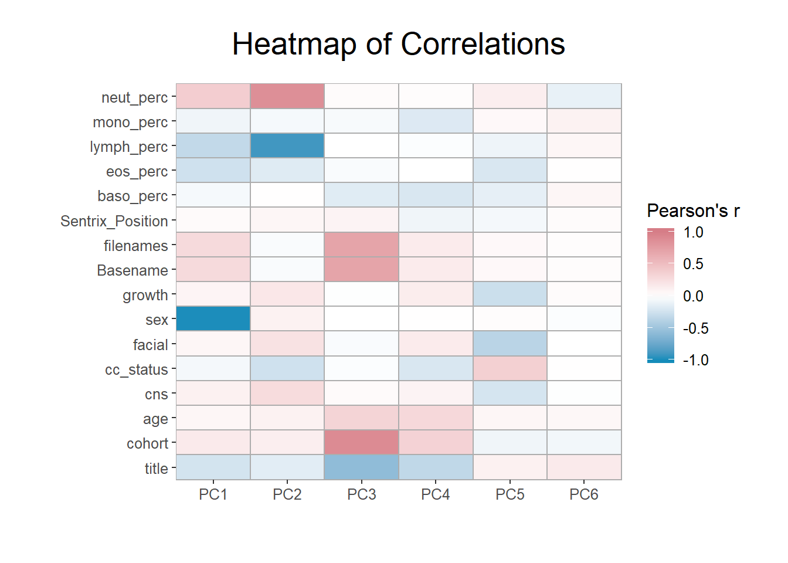

Each column in the RGset colData should be considered as a potential covariate in our models. Both technical and biological factors should be investigated as these may introduce batch effects or be clinically relevant. In order to assess this, we convert each column to a categorical variable whose correlations can be visualised.
Homogenous columns can be excluded, as any variables that do not change by definition cannot explain variation in the data. In this instance, the description for all samples is peripheral whole blood, so there is no need to investigate a tissue effect. However, in some instances samples may be taken from different tissues, and in this type of study analysis must be done separately for each to correctly separate clinically relevant methylation changes from tissue-specific methylation differences.
df <- apply(colData(RGset), 2, function(x) as.numeric(factor(x)))
keep <- apply(df, 2, sd) > 0
summary(keep)## Mode FALSE TRUE
## logical 25 16df <- df[ , keep]
colnames(df)## [1] "title" "cohort" "age"
## [4] "cns" "cc_status" "facial"
## [7] "sex" "growth" "Basename"
## [10] "filenames" "Sentrix_Position" "baso_perc"
## [13] "eos_perc" "lymph_perc" "mono_perc"
## [16] "neut_perc"As you can see, 16 columns need to be examined. These include sample identifiers, such as title and the Basename variable we created, as well as which cohort the participant was from. Other potential causes of variation are biological, such as age, sex, and cc_status, and some, like Sentrix_Position and the blood cell counts, represent potential batch effects or confounding.
Correlations between complete factors and the principal components is calculated, and this correlation matrix is then melted using the melt() function from the reshape2 package. This prepares it for visualization using ggplot2.
library(irlba)
pc <- prcomp_irlba(t(betas), n=6)
cxy <- round(cor(pc$x, scale(df)),2)
cxy[ , 1:9]## title cohort age cns cc_status facial sex growth Basename
## PC1 -0.23 0.16 0.07 0.11 -0.06 0.07 -0.99 0.08 0.28
## PC2 -0.15 0.13 0.10 0.27 -0.25 0.22 0.10 0.18 -0.03
## PC3 -0.57 0.89 0.33 0.04 -0.02 -0.03 0.00 -0.01 0.70
## PC4 -0.33 0.34 0.30 0.09 -0.20 0.15 0.01 0.14 0.15
## PC5 0.11 -0.08 0.07 -0.22 0.36 -0.36 0.02 -0.27 0.05
## PC6 0.16 -0.07 0.06 -0.01 0.01 0.00 -0.02 0.03 0.02library(reshape2)
melted_cxy <- melt(cxy)
head(melted_cxy)## Var1 Var2 value
## 1 PC1 title -0.23
## 2 PC2 title -0.15
## 3 PC3 title -0.57
## 4 PC4 title -0.33
## 5 PC5 title 0.11
## 6 PC6 title 0.16After some aesthetic preparation of the theme(), the correlations can be visualized in a heatmap using ggplot2’s geom_tile() function.
library(ggplot2)
ggplot(data = melted_cxy, aes(x=Var1, y=Var2, fill=value)) + th2 + th3 + th4 + th5 +
geom_tile(colour="#adadad",size=0.5) + ggtitle("Heatmap of Correlations") + labs(x="",y="")
By examining the correlations in the data, we can build our model in a more informed manner. The first PC is highly correlated with sex and, as is usual in EWAS, we intend to include this as a confounder. Cell counts appear of substantial importance and will also be adjusted for. Model specification should be informed by a combination of prior knowledge and inspection of patterns in the data.
Below we will specify a model adjusting for age, sex, sentrix position, cell counts, and cohort. It is not appropriate to adjust for sample ID type variables, such as Basename, despite their correlation with our PCs.
cateThe package cate uses high dimensional factor analysis to adjust for measured and unmeasured confounding in multiple hypothesis testing. Unmeasured confounders, which are correlated with both methylation and case-control status, can bias the results from association tests. This makes this method superior to using limma, since it both corrects for technical variation and performs robust linear regression.
We advise using cate over PCA, since you can specify that factors should be independent of the outcome of interest. This is not the case in PCA, which can result in biological variation being removed.
The first step in running an EWAS is to make sure that you have information on all your confounders, and that these are stored in a design matrix. This matrix should be created using the model.matrix() function, so that variables are treated correctly.
The formula that will be used for our EWAS is stored inside the RangedSummarizeExperiment and called when creating the design matrix, after ensuring that none of the covariates contain missing values. We adjust for measured confounders, including age, sex, sentrix position, and estimated cell percentages.
metadata(methData)$formula <- ~cc_status + age + sex + Sentrix_Position + cohort +
baso_perc + eos_perc + lymph_perc + mono_perc + neut_perc
covariates <- get_all_vars(metadata(methData)$formula, data=colData(methData))
nas <- apply(covariates, 1, anyNA)
methData <- methData[, !nas]
design <- model.matrix(metadata(methData)$formula, data=colData(methData))
design[1:5, 1:3]## (Intercept) cc_statusFASD age
## GSM3092700_9985178096_R01C01 1 0 17.3
## GSM3092701_9985178127_R03C02 1 0 11.3
## GSM3092702_9986360109_R02C02 1 0 9.5
## GSM3092703_9985178087_R01C01 1 0 15.0
## GSM3092704_9985178090_R01C01 1 0 6.7To correct for unknown confounders, we must estimate their number using the est.confounder.num() function from cate. In order to correctly input the arguments of this function you need to specify the variable of interest, which in this instance is case-control status, followed by a formula indicating that all other variables except the intercept are known confounders. This function also needs the design matrix as a data frame, the transposed beta values, and an indication of what methods and number of iterations you want to use.
library(cate)
beta.cate <- t(assays(methData)$betas)
factor.num <- est.confounder.num(~ cc_statusFASD | . - cc_statusFASD + 0,
as.data.frame(design), beta.cate,
method = "bcv", bcv.plot = FALSE,
rmax = 30, nRepeat = 20)
factor.num$r## [1] 8In this instance, it is suggested we correct for 9 unmeasured confounders. To implement this, we use the cate.fit() function, as shown below. The output object stores the beta values, estimated test statistics, and relevant p-values, and top hits can be viewed after using the Bonferonni correction to adjust for multiple testing.
results.cate <- cate.fit(design[,2,drop=FALSE], design[,-2], beta.cate,
r = 9, calibrate=FALSE, adj.method="naive")
padj.cate <- p.adjust(sort(results.cate$beta.p.value[,1], decreasing=FALSE), method="bonf")
head(padj.cate[padj.cate < 0.05])## cg00121876 cg20893180 cg21692450 cg22171758 cg04180046
## 2.756062e-10 1.653637e-09 6.430811e-09 1.387218e-08 2.296718e-08
## cg00504595
## 3.371583e-08length(padj.cate[padj.cate < 0.05])## [1] 265This analysis has identified 417 differentially methylated probes (DMPs) associated with FASD after adjusting for age, sex, and sentrix position. These can be analysed further, but first we want to outline alternatives to the cate-based EWAS, and demonstrate that results are comparable.
Limma is a package with excellent documentation that can be useful for smaller samples, due to the optional empirical Bayes step. Running limma is similar to running cate, except that the beta matrix does not need transposing and test statistics and p-values need to be manually derived.
beta.limma <- assays(methData)$betas
library(limma)
fit <- lmFit(beta.limma, design)
tstat <- fit$coef/fit$stdev.unscaled/fit$sigma
pval <- 2*pnorm(-abs(tstat[,2]))
padj <- p.adjust(sort(pval, decreasing=FALSE), method="bonf")
head(padj[padj < 0.05])## cg00121876 cg20893180 cg21692450 cg22171758 cg04180046
## 3.153599e-10 1.646578e-09 6.426680e-09 1.389541e-08 2.296891e-08
## cg00504595
## 3.370872e-08length(padj[padj < 0.05])## [1] 265As shown, results from limma are comparable with those from cate. Here, the same number of DMPs are identified and top hits are identical, albeit with slightly differing p-values. Despite this, for the reasons specified above, we still advise using cate unless your sample size is small enough to require the eBayes option.
Linear mixed models and linear models can both work well for performing EWAS and, when looking solely at top hits, are unlikely to differ greatly from results obtained using cate or limma.
baconWe developed a package called bacon (Iterson et al. 2017) to estimate and correct for bias and inflation of test statistics in EWAS. This maximizes power while properly controlling the false positive rate, by estimating the empirical null distribution using Bayesian statistics. The utility of the tool was illustrated through the application of meta-analysis by performing epigenome- and transcriptome-wide association studies (EWASs/TWASs) on age and smoking which highlighted an overlap in differential methylation and expression of associated genes. It can be used to remove inflation and bias often observed in EWAS.
library(bacon)
tstats <- cbind(limma=tstat[,2], cate=as.vector(fa$beta.t))
library(BiocParallel)
register(MulticoreParam(2))
bc <- bacon(tstats)Plots can be used to compare adjustment using cate with that using bacon, and bacon-adjusted limma and cate values can be compared side by side.
print(plot(bc, type="hist"))print(plot(bc, type="qq"))pvalsbc <- pval(bc)
head(pvalsbc[order(pvalsbc[,1]),])
pvals <- pval(bc, FALSE)
head(pvals[order(pvals[,1]),])If, after looking at the plots, strong bias is observed, running bacon should be seriously considered.
This DNAmArray package also contains a DMRfinder (Slieker et al. 2013) function, which can be used to identify differentially methylated regions (DMRs). This function takes a simple data frame as input, which needs to contain a column called crit with a binary indicator of whether the adjusted p-value was significant or not. Other options include mismatches, which specifies how many DMPs are allowed to be not significant in a row before a region is not deemed to be a DMR, and the icd or Inter-CpG distance required for a region to be identified.
dmrData <- data.frame(dmp = attr(padj.cate, "names"), crit = ifelse(padj.cate<0.05,1,0))
DMRs = DMRfinder(dmrData, mismatches=3, icd=1000)##
## ========================================================================DMRs## GRanges object with 12 ranges and 0 metadata columns:
## seqnames ranges strand
## <Rle> <IRanges> <Rle>
## [1] chr1 46939866-46940516 *
## [2] chr1 153762244-153762564 *
## [3] chr2 152830505-152830614 *
## [4] chr4 5710761-5711301 *
## [5] chr5 8457721-8458392 *
## ... ... ... ...
## [8] chr13 24144483-24144985 *
## [9] chr17 8928012-8928451 *
## [10] chr18 5891948-5892213 *
## [11] chr18 32173084-32173227 *
## [12] chr22 50165244-50165512 *
## -------
## seqinfo: 10 sequences from an unspecified genome; no seqlengthsIn this instance, 16 DMRs were found to be associated with FASD. These regions can be visualised with a chromosome-based circo plot, such as using OmicCircos to get a better understanding of the regions identified.
Our package also contains a cpgInfo() function, which can be used to map CpG probes to their nearest genes. This utilises the TxDb.Hsapiens.UCSC.hg19.knownGene package, which accesses the USCS annotation databases.
cpgs <- names(methData)
cpgInfo <- cpgInfo(cpgs, TxDb="TxDb.Hsapiens.UCSC.hg19.knownGene")## Fetching coordinates for hg19...## 'select()' returned many:1 mapping between keys and columnscpgInfo[1:10, 1:7]## seqnames start end width strand gene_id SYMBOL
## cg00000957 chr1 5922870 6052533 129664 - 261734 NPHP4
## cg00001349 chr1 166944819 166991447 46629 + 84944 MAEL
## cg00001583 chr1 199996730 200146550 149821 + 2494 NR5A2
## cg00002028 chr1 20959948 20978004 18057 + 65018 PINK1
## cg00002719 chr1 169364114 169429907 65794 - 57821 CCDC181
## cg00002837 chr1 44514030 44600809 86780 + 128209 KLF17
## cg00003202 chr1 151313116 151319769 6654 - 5993 RFX5
## cg00003287 chr1 201328136 201346828 18693 - 7139 TNNT2
## cg00007036 chr1 33722174 33766320 44147 + 149076 ZNF362
## cg00007898 chr1 205111631 205180727 69097 - 25778 DSTYKIterson, Maarten van, Erik W. van Zwet, Bastiaan T. Heijmans, Peter A.C. ’t Hoen, Joyce van Meurs, Rick Jansen, Lude Franke, et al. 2017. “Controlling bias and inflation in epigenome- and transcriptome-wide association studies using the empirical null distribution.” Genome Biology 18 (1). BioMed Central: 19. doi:10.1186/s13059-016-1131-9.
Slieker, Roderick C, Steffan D Bos, Jelle J Goeman, Judith VMG Bovée, Rudolf P Talens, Ruud Van Der Breggen, H Eka D Suchiman, et al. 2013. “Identification and systematic annotation of tissue-specific differentially methylated regions using the Illumina 450k array.” Epigenetics and Chromatin 6 (1). BioMed Central: 26. doi:10.1186/1756-8935-6-26.